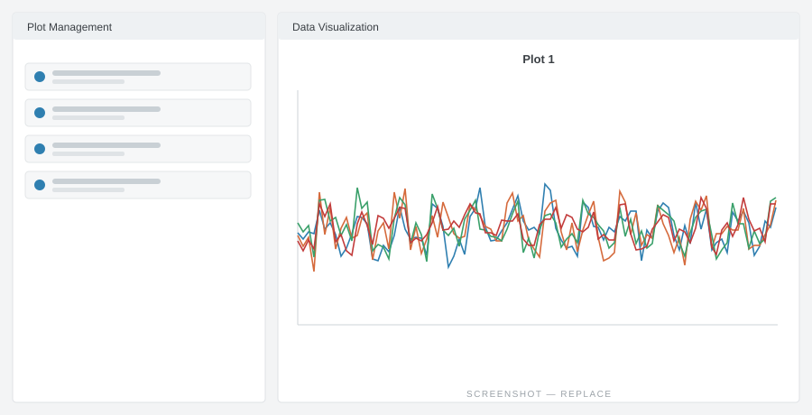

Learn about the Time Series Data Explorer
The Time Series Data Explorer lets you visualise and compare environmental measurements from across the FDRI catchments — from live, high-resolution readings at our monitoring sites to historic research records and citizen-science data.
Build your own plots by combining variables from different stations and networks, including real-time FDRI and COSMOS-UK data alongside Environment Agency and SEPA rainfall, river level and flow.
Zoom from individual minute-by-minute rainfall events out to years of record, and overlay datasets to see the relationships between them. To learn more about how the Explorer can be used to generate insights, load one of the FDRI Data Stories.
